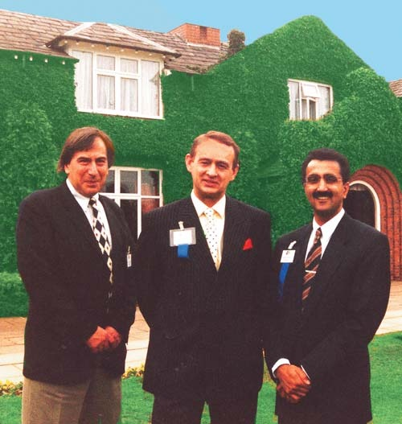
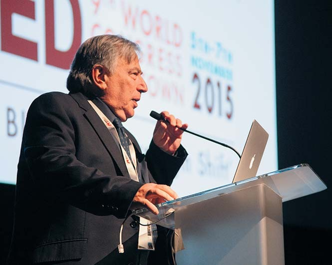
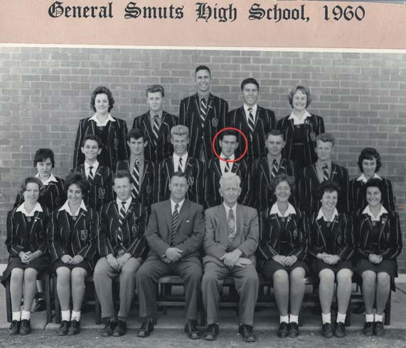
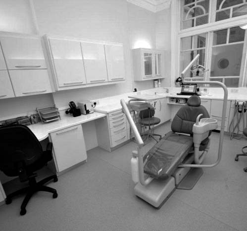
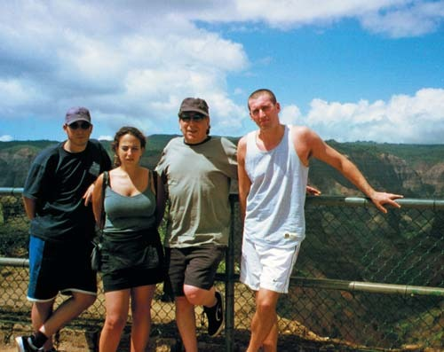
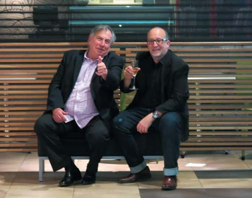
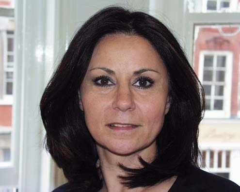
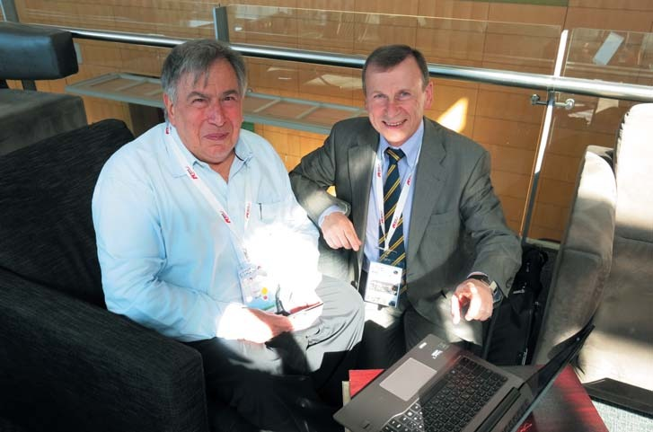

Гостиная · журнал «ДентАрт» 2016 №1
Девід Клафф: «Естетична майстерність — це спосіб клінічного мислення»
DAVID CLAFF: AESTHETIC MASTERY IS A WAY OF CLINICAL THINKING

Доктор Девід Клафф — співзасновник, колишній президент Британської академії естетичної стоматології (BAAD), член Європейської академії естетичної стоматології (ЕAED), Американської академії реставраційної стоматології (AARD), секретар Міжнародної федерації естетичної стоматології (IFED). Наша зустріч з ним відбулася 5-7 листопада 2015 року на IХ Міжнародному конгресі Міжнародної федерації естетичної стоматології в Кейптауні (ПАР), де відомі вчені і практики обговорювали питання мультидисциплінарного підходу в естетичній стоматології, зміни парадигми у великій п'ятірці — хірургії, ортодонтії, протезуванні, пародонтології, ендодонтії.
— Дорогий Девіде, Ви засновник Британської академії естетичної стоматології. Як виникла ця ідея і як створювалася ваша академія?
— До 1994 року Ламберт Фік, я і Тіду Манку були членами Європейської академії естетичної стоматології, також ми були членами Американської академії естетичної стоматології, і нам тоді дуже хотілося, щоб і в Великій Британії існувала своя Академія естетичної стоматології. У Флоренції, там, де народилася Міжнародна федерація естетичної стоматології, народилася і наша Британська академія естетичної стоматології (BAАD). Заснували її Ламберт Фік, я, Тіду Манку, Девід Вінклер, Мілтон Бейнард, Джон Тенісс, Пол Тіптон і Карло Непьюті. Було вирішено, що перша наша офіційна зустріч відбудеться у відомому в Англії гольф-готелі «Белфрі». Генрі Шайн люб'язно запропонував взяти на себе витрати з організації цієї зустрічі. Усі запрошені спікери, дуже відомі донині люди, такі як Рональд Голдштейн, Девід Гарбер та інші, — всі погодилися приїхати в Англію і виступити безкоштовно. Це була найкраща офіційна зустріч стоматологів, яка будь-коли відбувалася в Англії. Після цього почався розквіт Британської академії.


— Стоматологія у Великій Британії тривалий час відчувала дефіцит стоматологів, і це виливалося у величезні черги на стоматологічний прийом, стоматологічна допомога стала недоступною... Як справи нині?
— Сьогодні в Англії все ще не вистачає стоматологів... Уряд затвердив закон, згідно з яким кожен пацієнт повинен бути закріплений за якоюсь територією і відвідувати лікаря він може тільки за місцем проживання. Ось це і стало причиною виникнення безлічі проблем. Але сьогодні існує велика кількість приватних стоматологічних клінік, і це дуже добре. Відкриваються приватні клініки, в яких пацієнтам пропонують послуги стоматологів-терапевтів, ендодонтистів, ортодонтів, косметологів, в тому числі й процедури із застосуванням ботоксу, тобто фахівці різного профілю зібрані в одній клініці. Нині це дуже популярно! А державна медицина і далі в занепаді. Вона не спроможна задовольнити потреби населення, навіть його малозабезпечених верств.
— У мене склалося враження, що громадяни Великої Британії на всьому економлять, і це є способом життя... Але естетична стоматологія — дуже дороге задоволення! Наскільки пацієнти у Великій Британії вимагають естетичних досягнень від стоматологів?
— Ми в Британській академії естетичної стоматології пишаємося тим, що нам вдалося популяризувати естетичну стоматологію. Ми були першими, і невдовзі, років через 5 після заснування BAAD, у нас з'явилася Британська академія косметичної стоматології. Ми провели Міжнародний конгрес на тему естетики, і звичайно, всі ці події дуже швидко потрапили на сторінки газет, багато хто почав писати статті на цю тему. Сьогодні естетична стоматологія дуже затребувана. Будь-яка людина може прийти до рядового стоматолога і запитати, чи робить він дизайн усмішки, відбілювання зубів. Естетика усмішки сьогодні надзвичайно важлива для людей.
Нещодавно у мене був пацієнт, якому потрібно було встановити коронку. Він запитав, який матеріал я використовую для коронок, і заявив: «Я не хочу кольорові коронки. Зробіть так, щоб усе мало натуральний вигляд». Коли я все зробив, він узяв дзеркало, довго й уважно розглядав мою роботу і запитав: «Чи ідеально збігається коронка за відтінком з моїми зубами?» Тобто сьогодні питання естетики стало дуже важливим для пацієнтів.
— У реставрації зубів кераміка і композити мають свої конкуруючі показання, до вибору способу реставрації додаються вимоги Національної системи охорони здоров'я і страхових компаній. Яке місце займають композити в естетичній стоматології у Великій Британії?
— Сьогодні лише в трьох університетах Великої Британії вивчають амальгаму як реставраційний матеріал, і в жодному університеті не говорять, що амальгама є основним реставраційним матеріалом. Практично всі кваліфіковані стоматологи спеціалізуються саме на композиті, тепер уже далеко не всі вміють правильно працювати з амальгамою. Що ж до композиту і кераміки, то тут вибір матеріалу залежить від тих самих факторів, що і в Україні, та й в усьому світі... Що ти хочеш, наскільки міцною буде реставрація, скільки грошей ти готовий на це витратити... Однак саме композит активно застосовують як базовий матеріал, що використовується для стандартних реставрацій.

— Що з цього приводу говорить державна система охорони здоров'я: композит чи амальгама?
— Раніше з цього приводу були великі розбіжності, зараз їх немає. Прийнятне і те, й інше.
— Міжнародна федерація естетичної стоматології, яка об'єднує національні академії естетичної стоматології, тепер у центрі Вашої професійної активності. Які завдання стоять перед федерацією сьогодні, адже невдовзі буде її ювілей?
— Нині перед Міжнародною федерацією естетичної стоматології (IFED) стоїть безліч завдань. Мені б хотілося, і ми дуже активно над цим працюємо, щоб сфера діяльності IFED поширилася на ті країни, де люди не мають можливості побачити і почути видатних стоматологів зі світовими іменами. Запросити людей з IFED у ці країни, щоб навчати там стоматологів і показати їм, що можна зробити і як це можна зробити, — звичайно, для досягнення цієї мети необхідна співпраця між членами IFED. Будь-яка співпраця насамперед передбачає тісне спілкування, і це найбільша наша проблема. Як налагодити спілкування всіх академій естетичної стоматології — членів IFED? Зараз ми працюємо над цим питанням з допомогою веб-сайтів і соціальних мереж, які допомагають нам об'єднатися. Вважаю, це стане великим кроком уперед у нашій спільній справі. І якщо ви спостерігаєте за нашою діяльністю, то, гадаю, вже через рік побачите, наскільки IFED стала доступнішою і зрозумілішою для стоматологів різних країн і їхніх пацієнтів. Що ж до наших міжнародних конгресів, то вони багато чому вчать нас, але мені б хотілося провести такий конгрес у Монголії, зібрати там стоматологів і показати їм, що ще ми можемо робити. Я вважаю, що наша праця в таких країнах, як Монголія, Кенія, Конго, дуже важлива і потрібна. Ми могли б вибрати певних лекторів і поїхати туди з базовими лекціями з естетики.
— Я знаю, що у Південній Африці лише 3000 стоматологів, і для цих 3000 потрібно було б створити Академію естетичної стоматології...
— Так, це велика проблема. Якщо взяти, наприклад, Американську академію косметичної стоматології, то кількість її членів налічує 6000 осіб! Ще один аспект цієї проблеми — членські внески академій в IFED. Наприклад, чому Академія естетичної стоматології Монголії, до складу якої входять лише 20 осіб, має платити такий самий внесок, як і Американська академія косметичної стоматології? Ми розуміємо всі ці проблеми і працюємо над їх вирішенням.
— Перш ніж займатися естетичною стоматологією, треба стати стоматологом, отримати диплом... Багато гостей нашого журналу зізналися, що стали стоматологом досить випадково. Що вплинуло на Ваш вибір професії?
— Я спочатку хотів працювати викладачем, але не хотів викладати в школі. Якось я розговорився на цю тему зі своїм дядьком, він був стоматологом, і він порадив мені вивчати стоматологію, сказав, що це чудова професія! Коли я вступив до університету і вперше потрапив до медкабінету, я зрозумів, що медицина мені подобається. Мені так само хотілося викладати, але з того моменту я вже хотів викладати в галузі медицини.
— А тепер?
— Я все ще хочу викладати, я люблю це!
— Стоматологія різноманітна і багатолика, кожному стоматологові є напрям до душі. Кого Ви вважаєте своїми вчителями, хто спрямував Вашу професійну активність в естетичне русло?
— Це Девід Гарбер! Ми працювали з ним у Лондоні. За родом своєї діяльності він змушений був часто приїжджати в столицю Великої Британії. Саме він порадив нам вступити в Американську академію естетичної стоматології, тому що там дійсно справжня стоматологія. Девід Гарбер говорив, що естетична стоматологія — це стоматологія, яку не видно! І я з ним згоден! Естетична стоматологія — це заміна структури, форми, функції зі збільшенням тривалості служби зубів і з природною естетикою. Якщо ти виконуєш ці умови, ти стаєш стоматологом, який надає належну увагу естетиці. Сьогодні, з «цифровим дизайном усмішки» доктора Крістіана Кочмана, ти просто зобов'язаний спеціалізуватися на естетиці. Нині це стає цілою наукою, наукою про естетику. Ще 20 років тому такого не було, але сьогодні це справді наука. У цій науці, як і в будь-якій інший, є свої проблеми. Наприклад, естетика за допомогою вінірів та коронок. Ми вчимо тому, що вініри — це не реставрація, так говорить наука про естетику. Реставрація заснована на збереженні зуба, і естетика повинна бути малоінвазивною.

У цьому чудовому будинку працює Лондонський центр імплантації та естетичної стоматології, де розміщується хірургічна практика Девіда Клаффа.
— Тобто в стоматології, як у мистецтві? Майстерність художника не в його очах чи руках, вона народжується в його голові. Це спосіб мислення?
— Так, саме так! У нашому випадку естетична майстерність — це спосіб клінічного мислення.
— Хто в родині продовжує Вашу справу і обрав стоматологію своєю професією?
— Мій син — кандидат наук у галузі комп'ютерних технологій, донька — адвокат, а моїй внучці лише 9 років, але вона вже зараз хоче бути стоматологом, і вона моя надія! Однак я не шкодую, що мої діти не обрали своєю професією стоматологію. Вони дуже незалежні, і у кожного з них своя чудова робота!
— 9 лютого, коли журнал з Вашим інтерв'ю буде в руках наших читачів, у День Святої Аполлонії відзначають Міжнародний день стоматолога. Чи користується це професійне свято лікарів-стоматологів популярністю у Великій Британії?
— Воно популярне, усі знають про це свято, але цього дня ми все одно працюємо і не відзначаємо його, як інші свята. Ми підходимо до цього свята з гумором, можемо привітати один одного з Днем Святої Аполлонії або з Днем стоматолога і розійтися по робочих місцях.
— Ваші побажання читачам ДентАрта до Міжнародного дня стоматолога...
— Я вітаю всіх стоматологів з днем Святої Аполлонії! Ви маєте пишатися тим, що стали стоматологами, ви для цього напружено працювали... Коли виконуєте свою роботу, завжди пам'ятайте, що ви робите це і для своїх пацієнтів, і для себе. Підвищуйте свою кваліфікацію, рівняйтеся на світових лідерів у нашій професії. Будьте собою і прагніть досконалості у своїй роботі!
— Майбутнє стоматології в естетиці?
— Безсумнівно! І, наприклад, технологія CAD/CAM частково була створена і для естетики!



Дружина Шерон — кохана, колега, однодумець. Девід каже: «Зустріч з нею змінила все моє життя». Шерон каже те ж саме про Девіда. І це прекрасно!
— У майбутньому, з розвитком технологій, стоматологи будуть працювати як художники чи як інженери цифрової техніки?
— Як інженери цифрової техніки, але при цьому залишатися художниками, мати художнє бачення. Добре це буде чи погано, я не знаю... У мене є зубний технік у Лондоні, який принципово не працює з CAD/CAM, вважаючи, що він художник і це йому не потрібно... Але, гадаю, у майбутньому він буде змушений працювати з CAD/CAM, інакше його роботи перестануть бути затребуваними, люди будуть користуватися CAD/CAM. Якщо говорити про використання CAD/CAM в естетиці, я бачу багато плюсів у його застосуванні, він відкриває безліч нових можливостей у цій сфері.
— Дякую за інтерв'ю! Успіхів Вам у всіх починаннях!
— Thank you very much!

Девід Клафф і Сергій Радлінський — однодумці в тому, що лікареві-стоматологу дуже важливо мати художнє бачення.
Розмовляв Сергій Радлінський.
Фото Сергія Радлінського та з архіву Девіда Клаффа.